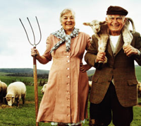

Tiedä mitä syöt
-
Loppupäätelmä

Mikä tämä on?
-
Sydänmaan liha / Yleinen
Ympäristö 

Tuoteturvallisuus Ravitsemus Työhyvinvointi 
Eläinten hyvinvointi Paikallisuus Taloudellinen vastuu Mikä tämä on? -
Vastuullisuusketju
Mikä tämä on?
Mainos
Sydänmaan Highlander – pellolta lautaselle
Sydänmaan Highlanderin Highland Cattle –luomukarja laiduntaa Pohjois-Pohjanmaalla, Kärsämäellä, Sydänmaankylässä Eero ja Seija Raudaskosken luomumaatilalla. (www.sydanmaanmaatilalomat.net)
Highland Cattle-karja on ulkona ympäri vuoden. Laajoilla laidunalueilla on myös metsälaitumet sekä sääsuojat käytettävissä. Karjalle menee vesijohtovesi myös talvella lämmitettyjen juomakuppien avulla. Kaikki karjan syömä rehu on luomurehua.
Highland Cattle –karja elää kiinteissä laumoissa ja emät hoitavat vasikkansa vieroitusikään saakka, joten lauma pääsee näin ollen toteuttamaan rodulle tyypillisiä käyttäytymistapoja. Jokaisella emolaumalla on oma jalostussonni, ja sonnivalinta on tehty huomioiden myös jalostus- , sekä sukulinjanäkökohdat.
Raudaskosken tilalla on Highland Cattle-eläimiä noin 130-150kpl, määrän vaihdellessa tuotantovaiheen mukaan.
Raudaskosken tila kuuluu luomuvalvonnan piiriin. Valvovana viranomaisena toimii Pohjois-Pohjanmaan ELY-keskus (FI-EKO-113).
|
Sonnin matka tilalta Seuloon tapahtuu seuraavasti: |

- 